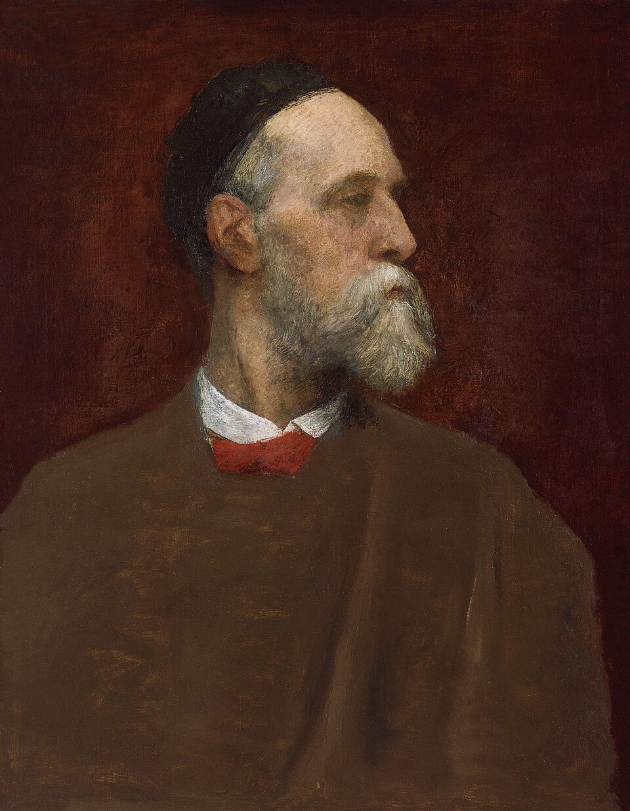

Pintor y escultor inglés
George Frederic Watts
1817–1904
Pintor de alegorías morales en una Inglaterra que prefería la anécdota, rechazó dos veces el título de barón y regaló buena parte de su obra a la nación. Quiso pintar «ideas, no cosas». Su galería en Compton, levantada por él mismo, sigue siendo el mejor sitio para verlo.